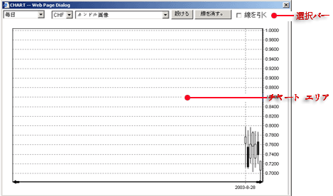
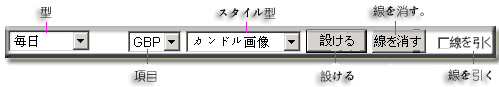

チャート
主画面にあるメーニューのチャートボタンでマウスをクリックするとチャート・ダイアログが開始します。このチャートは主に下記により構成されています。
選択バー
チャート エリア

チャート画面
選択バー
チャットウインドウの最上段にボタンバーがあり、このボタンバーはお客様に対する多種多彩のチャートプロパティ及びその機能が用意されております。
ボタン バー

-
型
-
下記チャートはお客様の選択に対して有効です。
-
現在時間
-
一分
-
五分
-
日
-
週間
-
月
-
項目
- 引出ボックスはお客様が選択出切る項目を備えています。
-
スタイル型
-
ユーザーに対して以下の項目が活用出来ます。
-
カンドル
-
開市最高最低価格
-
閉市最高最低価格
-
開閉市最高最低価格
-
設ける
-分析選択指示選択
-
線を消す
-
お客様自身がラインを削除することです。
-
線を引く
- お客様がグラフ上に線を描くことが出来ます。